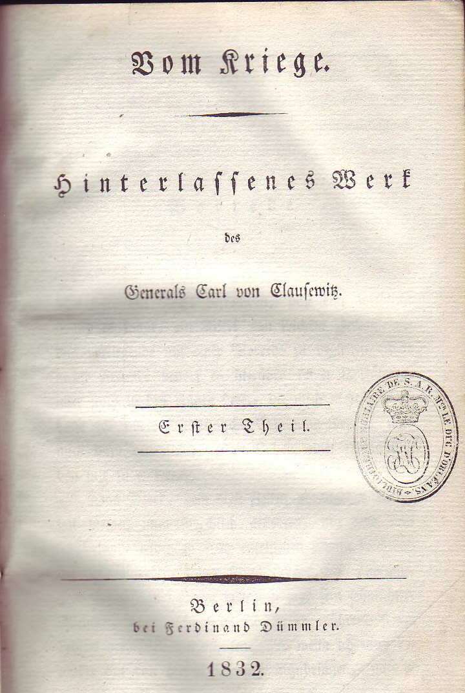
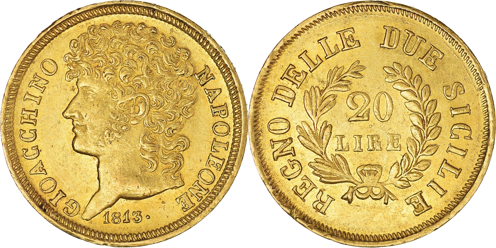
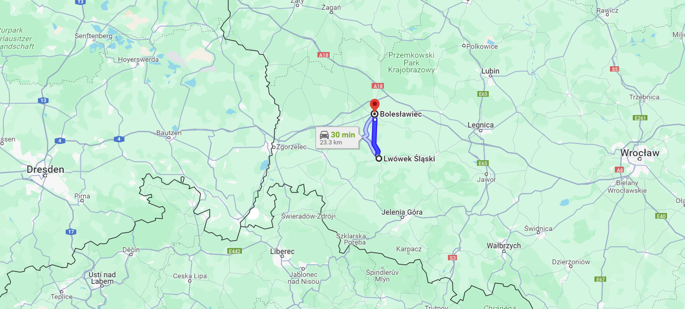
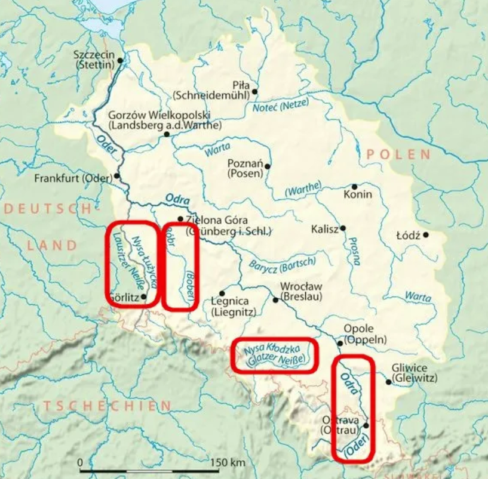

드레스덴을 향하여 (4) - 나폴레옹의 계산
게시: 2024-01-01T06:30:27+09:00
바로 며칠 전까지 네의 제3군단 수석 참모를 맡고 있던 조미니는 당연히 그랑다르메에 대해 소상히 알고 있었습니다. 아무리 그때 명예를 소중히 여기는 귀족들과 신사들이라고 하더라도, 그에게 그랑다르메의 병력 배치 현황과 나폴레옹의 작전 방향을 묻지 않는다면 그거야말로 직무유기일일 것입니다. 물론 조미니를 고문실에 가둬놓고 두들겨 패가면서 취조한 것은 아니었지만, 많은 이들이 잡담 형식으로라도 조미니에게 이런저런 질문을 던졌을 것입니다. 문제는 조미니가 어느 정도까지 대답을 했느냐 하는 것이지요. 그에 대해서는 이야기가 좀 엇갈립니다. 조미니 본인은 물론 그에 대해 자신이 그랑다르메의 군사 기밀을 적에게 술술 불었다는 기록을 남기지 않았습니다. 그러나 다들 자기에게 유리한 대로 사실을 왜곡하는 것이 지극히 일상적인 일이었던 당시의 회고록을 그대로 믿으면 곤란합니다. 나폴레옹 본인은 훗날 세인트 헬레나 섬에서 구술한 회고록에서, 조미니의 망명이 자신에 대한 배신은 아니었다고 담담하게 적었고, 이는 조미니가 심각한 군사기밀을 유출한 것은 아니라는 것을 반영하는 일입니다. 조미니를 제일 먼저 만나본 랑제론도 조미니의 망명이 연합군에게 딱히 별 도움이 되지 않았다고 평가절하하여, 조미니가 가져온 정보가 있다고 하더라도 이미 스파이 등을 통해 연합군이 대충 파악하고 있는 평범한 정보에 불과했다는 것을 암시했습니다.

(자존심 강한 자칭 천재 조미니의 귀순을 모두가 환영한 것은 아니었습니다. 랑제론도 그렇게 시큰둥한 사람 중 하나였습니다. 랑제론은 회고록에 이 귀순으로 인해 조미니는 그때까지 쌓아올렸던 자신의 명성과 명예를 한꺼번에 잃었으며, 그 귀순이 연합군에게 별 도움도 되지 못했다고 차가운 평가를 남겼습니다. 전략가로서 후대에 조미니와 경쟁 관계에 놓이게 되는 클라우제비츠가 조미니의 귀순에 대해 어떻게 평가했는지는 남아 있지 않습니다만, 실은 클라우제비츠가 그의 명저 '전쟁론'을 통해 명성을 얻은 것은 수십 년 후, 그것도 클라우제비츠가 죽은 이후의 일이었습니다. 따라서 클라우제비츠는 조미니에게 경쟁 의식을 느낄 처지가 아니었습니다. 이 사진은 클라우제비츠의 명저이자 나중에 조미니의 전쟁 이론서와 명성을 다투던 '전쟁론'(Vom Kriege, 영어로는 On War)의 초판본입니다. 보시다시피 이 책은 1832년에 나왔으며 클라우제비츠는 이 책을 1816년 이후부터, 그러니까 전쟁이 완전히 다 끝난 이후부터 쓰기 시작했습니다. 그는 그나이제우와 함께 1831년 폴란드 반란을 진압하기 위해 폴란드에 파병되었다가 그 해 11월에 콜레라에 감염되어 사망했습니다. 당시 북부 유럽에서 콜레라가 발생한 것은 그 때가 처음이라서 유럽 전역을 공포로 몰아넣었는데, 그나이제나우도 클라우제비츠보다 3개월 먼저 콜레라로 인해 사망했습니다. 이 전쟁론은 그의 사후에 그의 와이프인 마리 폰 브륄이 편집하여 발간한 책이지요.)
(클라우제비츠의 부인 마리 폰 브륄(Marie von Brühl)입니다. 아버지가 일찍 돌아가시긴 했지만 나름 명문가 따님이었던 마리는 24세이던 1803년 어떤 귀족 모임에서 미천한 중위 신분이던 클라우제비츠를 처음 만났습니다. 이 둘은 연애 기간이 당시 기준으로는 매우 길어서 무려 7년이나 이어졌는데, 이는 가족을 먹여 살리기엔 턱없이 부족한 봉급을 받는 중위 신분이었던 클라우제비츠에게 물려받을 재산이 없어서 그녀의 어머니가 그 결혼에 반대했기 때문이었습니다. 결국 1810년 8월, 클라우제비츠가 마침내 먹고 살만한 급여를 받는 소령 계급으로 진급하자마자 그 해 12월 이들은 마침내 결혼할 수 있었습니다. 마리는 매우 재능있는 화가이자 예술가로서, 그녀가 없었다면 클라우제비츠의 명저는 사장될 수도 있었습니다.) 그런데 정작 조미니를 직접 대면하지도 않았던 블뤼허는 조미니가 나폴레옹의 작전 방향에 대해 소상히 털어놓았다고 적었습니다. 조미니의 진술에 따르면, 슐레지엔 방면에 배치된 그랑다르메의 군단들은 일단 방어 모드로 움직이라는 명령을 받았으며, 나폴레옹 본인은 그랑다르메의 주력을 이끌고 북진하여 연합군의 3개 야전군 중 북부 방면군을 격파하고 베를린을 함락시킬 계획이었습니다. 이 중요한 정보를 혼자만 알고 있을 블뤼허가 아니었습니다. 블뤼허는 이 소식을 즉각 당사자인 북부 방면군 사령관인 베르나도트에게 전했습니다. 이 소식은 베르나도트를 공황 상태에 몰아넣었습니다. 친절하게도 블뤼허는 '자신의 슐레지엔 방면군은 이미 합의된 계획에 따라, 나폴레옹의 뒤꿈치에 바싹 붙어서 스웨덴 왕세자 전하를 향한 나폴레옹의 공격을 최대한 방해하겠다'라고 협력 의사를 밝혔지만, 이건 베르나도트에게 별 위로가 되지 않았습니다. 전해지는 말에 따르면 이 소식을 들은 이후 베르나도트는 계속 안절부절하는 것이 모두의 눈에 잘 보였다고 합니다. 조미니가 정말 그렇게 밝혔는지, 그리고 왜 그런 정보를 연합군에게 누설했는지는 불분명합니다만 어차피 나폴레옹에게는 별다른 해가 되지도 않았고 연합군에게도 큰 도움이 되지도 않았습니다. 이 정보는 완전히 잘못된 정보였기 때문이었습니다. 일단 나폴레옹은 앞서 언급했던 것처럼, 연합군의 병력 규모를 약간 과소평가하고 있었고, 이들이 어떤 식으로 나올지 먼저 살핀 뒤에 그에 대응하여 작전을 펼칠 작정이었습니다. 사전에 합의된 바에 따라, 보헤미아 방면군을 구성할 러시아군과 프로이센군은 8월 10일 휴전 종료일에야 보헤미아로 이동을 시작했기 떄문에, 나폴레옹은 연합군이 보헤미아 방면군에 가장 큰 병력을 배치한다는 것을 전혀 모르고 있었습니다. 나폴레옹은 당연히 슐레지엔 방면군이 연합군의 주력부대라고 판단했습니다. 그런 와중에 블뤼허의 프로이센 방면군이 신성한 협정을 어기고 8월 17일이 되기도 전에 중립지대로 마구 밀고 들어온 것에 대해 나폴레옹은 '시정잡배 같은 행동'이라며 격분했지만 그게 큰 문제를 낳은 것은 아니었습니다. 어차피 나폴레옹은 일단 엘베강을 끼고 수세를 취할 예정이어서, 중립지대를 접하고 배치된 군단들을 후퇴시키고 있었기 때문이었습니다.

(1812년 베레지나로부터의 후퇴를 정말 무책임하게 지휘하다가 그나마 사령관직을 내팽개치고 자신의 영지인 나폴리 왕국으로 가버려 많은 비난을 받았던 뮈라는, 이때 즈음하여 슬그머니 나폴레옹에게 합류했습니다. 그가 나폴리 왕국의 국왕임을 나타내는 유물인, 그의 얼굴이 새겨진 1813년 나폴리 왕국 20리라짜리 금화입니다. 현재 3090 유로에 팔리고 있네요.) 이런 상황 속에서 8월 16일 오전, 나폴리에서 돌아와 그랑다르메에 합류한 뮈라와 함께 바우첸에 도착한 나폴레옹은 바클레이와 비트겐슈타인의 러시아군 병력이 슐레지엔에서 보헤미아로 이동하고 있다는 보고를 받았습니다. 연합군의 주공세가 슐레지엔에서 서쪽을 향해 시작될 것이라고 예상하고 있던 나폴레옹에게 이건 다소 뜻밖의 소식이었습니다. 그러나 나폴레옹은 전혀 당황하지 않았습니다. 어차피 나폴레옹은 오스트리아군이 그랑다르메의 약한 부분을 위협하기 위해 보헤이마 쪽에서 드레스덴을 향하여 공세를 취할 것이라고 예상했기 때문이었습니다. 그에 대해서 나폴레옹은 이미 충분한 계산을 해두었습니다. 드레스덴은 1813년 그랑다르메 작전의 중심지로서 주요 보급창이기도 했고 그 주변이 충분히 요새화된 곳이었습니다. 또한 엘베 강 유역 곳곳의 도하 가능 지역에는 비텐베르크나 토르가우 같은 요새가 자리잡고 있었으므로, 연합군이 이 일대에서 활개를 치며 작전을 펼치는 것은 결코 쉽지 않은 일이었습니다. 다만 나폴레옹은 연합군도 자신의 약점을 연구했을 테니, 드레스덴을 직접 노리기 보다는 드레스덴과 파리 사이의 연결로가 될 수 있는 라이프치히를 노릴 수도 있다고 생각했습니다. 그 어떤 경우이든, 그는 자기가 주력부대를 데리고 자리를 비운다고 하더라도 드레스덴은 최소한 1주일 이상은 잘 버틸 수 있을 것이라고 확신했습니다. 나폴레옹은 그랑다르메 특유의 강점인 빠른 행군과, 현재 그랑다르메의 위치가 가진 내선 이동의 이점을 십분 활용할 생각이었습니다. 휴전이 종료된 이후 일단 관망세를 유지한다며 다소 소극적인 수비 모드였던 나폴레옹의 머리는 재빨리 돌아갔습니다. 그에게 최고의 수비는 언제나 공격이었습니다. 그는 빅토르의 제2군단과 포니아토프스키의 제8군단을 오스트리아 영토 안으로 진입시켜 슈바르첸베르크의 오스트리아군에게 부담을 지우고, 막도날의 제11군단, 로리스통의 제5군단은 뢰벤베르크(Lowenberg), 네의 제3군단과 마르몽의 제6군단은 분츨라우(Bunzlau)에서 동쪽에 대한 방어를 맡게 한 뒤, 자신은 고참 근위대와 방담(Dominique Vandamme)의 제1군단, 그리고 라투르-모부르(Victor de Latour-Maubourg)의 제1기병군단을 이끌고 재빨리 블뤼허의 슐레지엔 방면군을 격파하기로 결심했습니다.

(왜 하필 뢰벤베르크와 분츨라우를 방어선으로 정했는지는 이 지도를 보시면 딱 이해가 되실 것입니다. 드레스덴과 브레슬라우 사이를 횡단하는 것이 바로 뢰벤베르크-분츨라우 방어선입니다.)

(실은 저 뢰벤베르크와 분츨라우는 모두 보버(Bober, 체코어로는 Bobr)강에 접한 도시입니다. 그러니까 나폴레옹은 보버강을 방어선으로 삼은 것입니다.) 그러니까 진짜 위기에 처한 것은 베르나도트가 아니라 블뤼허 본인이었던 것입니다. 그런데... 과연 그랬을까요? 전쟁터에서는 모든 것이 순식간에 휙휙 바뀌는 법입니다. Source : The Life of Napoleon Bonaparte, by William Milligan Sloane Napoleon and the Struggle for Germany, by Leggiere, Michael V https://en.wikipedia.org/wiki/On_War https://en.wikipedia.org/wiki/Marie_von_Br%C3%BChl https://bruckfamilyblog.com/post-132-fate-of-the-brucks-prinz-von-preusen-family-hotel-in-ratibor-raciborz-geopolitical-factors/ https://www.vcoins.com/en/stores/numiscorner/239/product/coin_italian_states_naples_joachim_murat_20_lire_1813_au5053_gold/1676208/Default.aspx